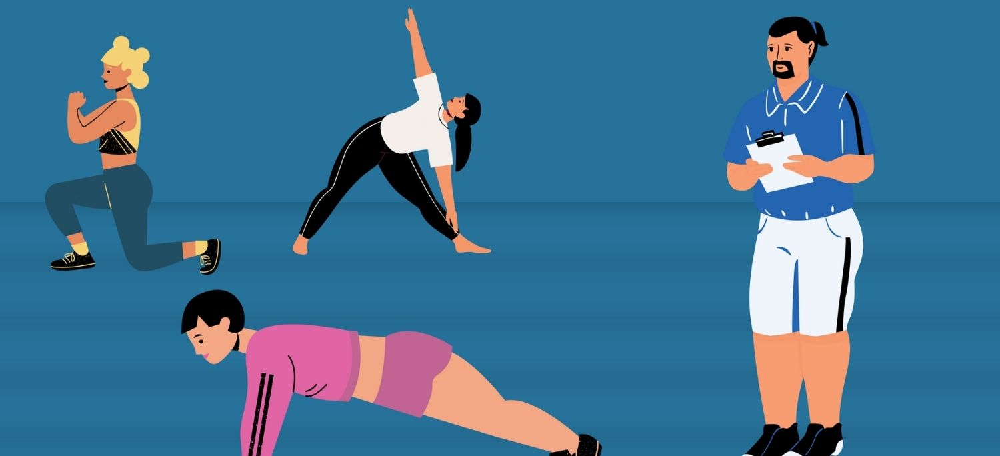

Principios Clave para la Hipertrofia
Para maximizar el crecimiento muscular, debes aplicar estos principios científicos:
- Resistencia progresiva: Aumentar gradualmente el peso, las repeticiones o el volumen de entrenamiento.
- Tensión mecánica: Usar cargas moderadas a pesadas (70-85% de tu 1RM) para estimular las fibras musculares.
- Daño muscular controlado: Ejercicios excéntricos (fase negativa) y rangos completos de movimiento.
- Fatiga metabólica: Series cercanas al fallo muscular (pero no siempre llegar a él).
- Frecuencia óptima: Entrenar cada grupo muscular 2-3 veces por semana.
Selección de Ejercicios
Prioriza movimientos compuestos (multiarticulares) y complementa con ejercicios de aislamiento.
Ejercicios Clave (Compuestos)
- Sentadillas (Barra, goblet, búlgaras) → Cuádriceps, glúteos, core.
- Press de Banca (Barra, mancuernas, inclinado) → Pectoral, hombros, tríceps.
- Peso Muerto (Convencional, rumano, sumo) → Espalda baja, isquios, glúteos.
- Dominadas/Remo con Barra → Dorsales, bíceps, trapecio.
- Press Militar → Hombros, tríceps.
Ejercicios de Aislamiento (Accesorios)
- Curl de Bíceps (Barra/mancuernas) → Bíceps.
- Extensiones de Tríceps (Fondos, polea) → Tríceps.
- Elevaciones Laterales → Deltoides laterales.
- Prensa de Piernas → Cuádriceps/glúteos (alternativa a sentadillas pesadas).
Esquema de Series y Repeticiones
- Rango ideal para hipertrofia: 6-12 repeticiones por serie.
- Volumen semanal por grupo muscular: 10-20 series (principiantes: 10-12; avanzados: 15-20).
- Descanso entre series: 60-90 segundos (ejercicios de aislamiento: 45-60s).
Ejemplo de Rutina (4 días)
Día Piernas: Sentadillas 4x8-10, Peso Muerto 3x6-8, Prensa 3x10-12
Día Empuje: Press Banca 4x8-10, Press Militar 3x8-12, Fondos 3xAMRAP
Día Tirón: Dominadas 4x6-8, Remo con Barra 3x8-10, Face Pull 3x12-15
Día Accesorios: Curl Bíceps 3x10-12, Extensiones Tríceps 3x12-15, Abdominales 3x15-20
Progresión de Carga
Para seguir creciendo, aplica estos métodos:
- Aumento de peso: Sube 2.5-5 kg cuando completes todas las repeticiones con buena forma.
- Aumento de repeticiones: Si llegas a 12 repeticiones fácilmente, sube el peso.
- Técnicas de intensidad:
- Drop Sets (bajar peso tras el fallo).
- Rest-Pause (pausas cortas para más repeticiones).
- Repeticiones excéntricas (enfocarse en la fase negativa).
Nutrición y Descanso
- Proteína: 1.6-2.2 g/kg de peso corporal (ej: 70 kg → 112-154 g/día).
- Superávit calórico: +300-500 kcal para ganar músculo (sin exceso de grasa).
- Descanso: 7-9 horas de sueño y 48h de recuperación por grupo muscular.
Conclusión: Combina entrenamiento progresivo, nutrición adecuada y descanso suficiente para maximizar la hipertrofia muscular. ¡La consistencia es clave!